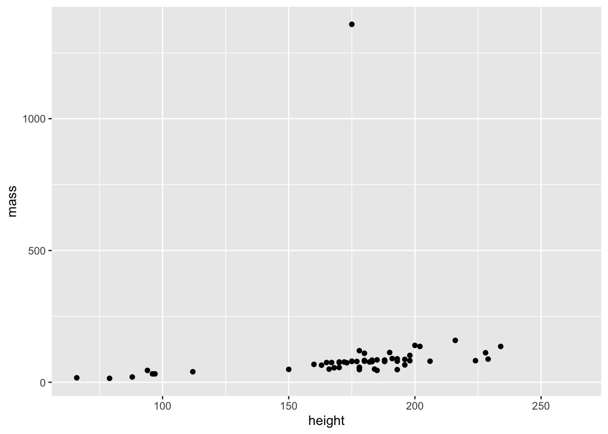
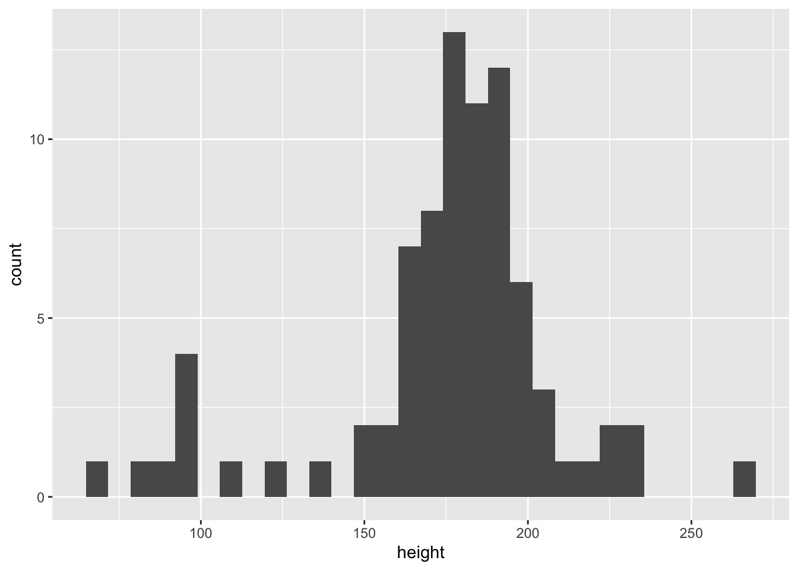
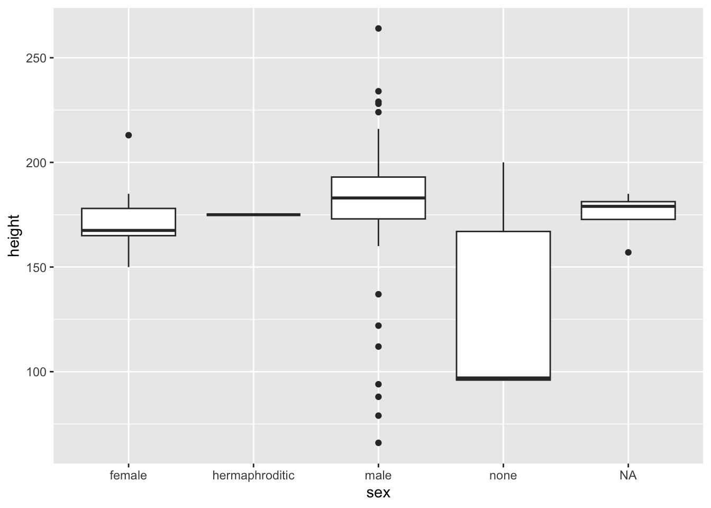

library(tidyverse)Chapter 1 Data Visualization
Explorations Using ggplot2
Setup for Work
To use ggplot2 functions, we always have to first load the tidyverse:
For help with ggplot2, see ggplot2.tidyverse.org and the ggplot2 Cheatsheet here last updated July 2023.
This document will introduce basic elements of ggplot2 following the steps in Chapter 1 of R4DS but using a different data set.
The starwars Data Frame
The data set starwars is a built-in data set that’s available after loading the tidyverse family of packages as we did above.
Dataset terminology
Each row is an observation
Each column is a variable
Each entry is a value
starwars# A tibble: 87 × 14
name height mass hair_color skin_color eye_color birth_year sex gender
<chr> <int> <dbl> <chr> <chr> <chr> <dbl> <chr> <chr>
1 Luke Sk… 172 77 blond fair blue 19 male mascu…
2 C-3PO 167 75 <NA> gold yellow 112 none mascu…
3 R2-D2 96 32 <NA> white, bl… red 33 none mascu…
4 Darth V… 202 136 none white yellow 41.9 male mascu…
5 Leia Or… 150 49 brown light brown 19 fema… femin…
6 Owen La… 178 120 brown, gr… light blue 52 male mascu…
7 Beru Wh… 165 75 brown light blue 47 fema… femin…
8 R5-D4 97 32 <NA> white, red red NA none mascu…
9 Biggs D… 183 84 black light brown 24 male mascu…
10 Obi-Wan… 182 77 auburn, w… fair blue-gray 57 male mascu…
# ℹ 77 more rows
# ℹ 5 more variables: homeworld <chr>, species <chr>, films <list>,
# vehicles <list>, starships <list>Questions:
- How many rows?
- How many columns?
- What do the rows represent?
- What do the columns represent?
You can type the View() command at the Console to browse the data interactively.
- What can we say about the first observation?
Getting a glimpse of the data
The glimpse commands also help give us a feel for the basic characteristics of the data. This command essentially transposes the print command so that the rows are the data columns, showing as much of the data as possible in a small area.
glimpse(starwars)Rows: 87
Columns: 14
$ name <chr> "Luke Skywalker", "C-3PO", "R2-D2", "Darth Vader", "Leia Or…
$ height <int> 172, 167, 96, 202, 150, 178, 165, 97, 183, 182, 188, 180, 2…
$ mass <dbl> 77.0, 75.0, 32.0, 136.0, 49.0, 120.0, 75.0, 32.0, 84.0, 77.…
$ hair_color <chr> "blond", NA, NA, "none", "brown", "brown, grey", "brown", N…
$ skin_color <chr> "fair", "gold", "white, blue", "white", "light", "light", "…
$ eye_color <chr> "blue", "yellow", "red", "yellow", "brown", "blue", "blue",…
$ birth_year <dbl> 19.0, 112.0, 33.0, 41.9, 19.0, 52.0, 47.0, NA, 24.0, 57.0, …
$ sex <chr> "male", "none", "none", "male", "female", "male", "female",…
$ gender <chr> "masculine", "masculine", "masculine", "masculine", "femini…
$ homeworld <chr> "Tatooine", "Tatooine", "Naboo", "Tatooine", "Alderaan", "T…
$ species <chr> "Human", "Droid", "Droid", "Human", "Human", "Human", "Huma…
$ films <list> <"A New Hope", "The Empire Strikes Back", "Return of the J…
$ vehicles <list> <"Snowspeeder", "Imperial Speeder Bike">, <>, <>, <>, "Imp…
$ starships <list> <"X-wing", "Imperial shuttle">, <>, <>, "TIE Advanced x1",…Fortunately, most built-in R functions have help documentation to give more details. We typically run this at the command line since you wouldn’t want help pages in your output. The line #|eval:false line tells R not to run this code cell when we Render the document.
?starwarsCreating a ggplot
Steps in creating a ggplot:
- Use
ggplot()to define the plot - Add layers to specify details
- geoms indicate the type of graphing output
- aesthetics specify visual properties of the graph
- aesthetic mappings specify connections between data and visual features of the graphs
- aesthetics can also specify general visual properties (e.g., dot size)
ggplot(
data = starwars,
mapping = aes(x = height, y = mass)
) +
geom_point()
Question: Which is the unusual character? How did you figure it out?
Adding aesthetics and layers
Let’s consider a third variable to see if the relationship between height and mass holds across categories of sex by mapping sex to the aesthetic color.
ggplot(
data = starwars,
mapping = aes(x = height, y = mass, color = sex)
) +
geom_point()
Note: We will worry about dealing with missing and NA values later on in the course.
Alternatively, we could map sex to shape rather than color as shown below:
ggplot(
data = starwars,
mapping = aes(x = height, y = mass, shape = sex)
) +
geom_point()We now add one more layer: a best fit line displaying the relationship between height and mass.
ggplot(
data = starwars,
mapping = aes(x = height, y = mass, color = sex)
) +
geom_point() +
geom_smooth(method = "lm")This is probably not what we want since there are too few characters in some categories of sex to construct a meaningful best fit line. Why did we get lines for each category of sex rather than one overall line?
Global vs Local mappings
As we learn more about using ggplot2, it will be important to understand the distinction between different kinds of aesthetic mappings:
Global mappings: set in the initial
ggplot()function and apply to all layers within the plot unless specifically overridden.Local mappings: set within individual
geomlayers and only affect the geoms associated with that particular layer.
Moving color = sex to be a local mapping for the geom_point layer gives us the overall smoothed line we want. Note that we know have two separate aes() instances, one global and one local:
ggplot(
data = starwars,
mapping = aes(x = height, y = mass)
) +
geom_point(aes(color = sex)) +
geom_smooth(method = "lm")
As in the text, we can map sex to both color and shape to make it easier to distinguish the groups. The legend at the right updates accordingly:
ggplot(
data = starwars,
mapping = aes(x = height, y = mass)
) +
geom_point(aes(color = sex, shape = sex)) +
geom_smooth(method = "lm")Labeling Our Plot
Graphs are not complete without labeling. That comes in another layer of the grammar of graphics, the thematic elements (more about that later). The plot below includes appropriate labels for our data:
ggplot(
data = starwars,
mapping = aes(x = height, y = mass)
) +
geom_point(aes(color = sex, shape = sex)) +
geom_smooth(method = "lm") +
labs(
title = "Scatterplot of Weight (y) vs. Height (x) of Starwars characters",
x = "Height (cm)",
y = "Weight (kg)",
color = "Sex", shape = "Sex"
)Note: Labels are just text and do not need to use the original variable names. Many more label options are available.
Aside: ggplot2 calls
More concise ggplot2 code is used in practice, taking advantage of the fact that R expects the first two arguments of the ggplot() command to be data= and mapping=. The following chunk shows a concise way of specifying a simple scatterplot.
ggplot(starwars, aes(x = height, y = mass)) +
geom_point()
Visualizing Distributions
The types of graphs used to visualize the distribution of a variable depends on the type of variable
Numerical: the characteristic measured by the variable is inherently numeric
Categorical: takes on only a small set of distinct non-numerical values
Bar charts for categorical variables
First, for a variable with relatively few categories:
ggplot(starwars, aes(x = sex)) +
geom_bar()With many distinct categories (homeworld), one option is to rotate the graph by putting the variable on the side as the y instead of x:
ggplot(starwars, aes(y = homeworld)) +
geom_bar()# Use fct_infreq() to put the categories in order of occurrence
ggplot(starwars, aes(y = fct_infreq(homeworld))) +
geom_bar()Histograms for numerical variables
Inspect the distribution of height for Star Wars characters via a histogram showing heights and their associated frequencies:
ggplot(starwars, aes(x = height)) +
geom_histogram()
Note the clusters of shorter and taller characters (remember the scale is cm). We can obtain a more colorful result and a different view by changing aesthetic and parameter specifications. (Note the different functions of color and fill here.)
ggplot(starwars, aes(x = height)) +
geom_histogram(fill = "orange", color = "black",binwidth = 20)Visualizing Relationships
Numerical and Categorical Variables
Boxplots
Boxplots are convenient for comparing the distribution of variables across levels of categorical variables and for highlighting extreme observations:
ggplot(starwars, aes(x = sex, y = height)) +
geom_boxplot()
Note: The above boxplot looks different from those in this section of the text because some categories have very few characters.
Features of boxplots:
The box represents the middle 50% of the data
The top and bottom edges represent the upper and lower quartiles
Points plotted separately represent potential outliers
Density Plots
Density plots are smoothed versions of histograms and can also be used to compare distributions across levels of categorical variables. Note that groups with fewer than two data points (e.g., “hermaphroditic”) are too small to be smoothed.
ggplot(starwars, aes(x = height, color = sex)) +
geom_density()# Another approach using alpha transparency
ggplot(starwars, aes(x = height, color = sex, fill = sex)) +
geom_density(alpha = 0.5)Two Categorical Variables for cars Data
We seem to be stretching the starwars data a bit thin so let’s look at a different data set. To consider the relationships between two categorical variables, we’ll consider the built-in mpg dataset. This dataset has fuel economy data for 34 cars for the years 1998 to 2008 with a total of 234 observations. We will use bar charts to explore the relationship between class of car and type of drive train (e.g., front wheel drive, 4 wheel drive, etc.).
Note the variability in the number of vehicles in each class.
#|fig-cap = "Single variable bar chart"
# Single variable bar chart
ggplot(mpg, aes(x = class)) +
geom_bar()
The first plot below shows the counts in each class-drv combination while the second shows conditional proportions of drv in each category of class. (What do you observe?)
Stacked bar charts
ggplot(mpg, aes(x = class, fill = drv)) +
geom_bar()
Relative frequency bar chart
ggplot(mpg, aes(x = class, fill = drv)) +
geom_bar(position = "fill")Two Numerical Variables for cars Data
Question: How is highway mileage related to engine size (displacement)
ggplot(mpg, aes(x = displ, y = hwy)) +
geom_point()
Question: Consider also how vehicle class is related to these variables using two approaches:
Approach 1: Color vehicles by class
ggplot(mpg, aes(x = displ, y = hwy, color = class)) +
geom_point()
Approach 2: Separate plots (facets) for each class
ggplot(mpg, aes(x = displ, y = hwy, color = class)) +
geom_point() +
facet_wrap(~class)Summary
Key topics in this section
- ggplot2 Fundamentals:
- The ggplot() function
- Visualizations as mappings from variables to aesthetics
- The grammar of graphics:
- Building plots layer-by-layer
- Enhancing with labeling and aesthetics
- Use of graphics to explore:
- Distributions
- Relationships
More depth and details to come!